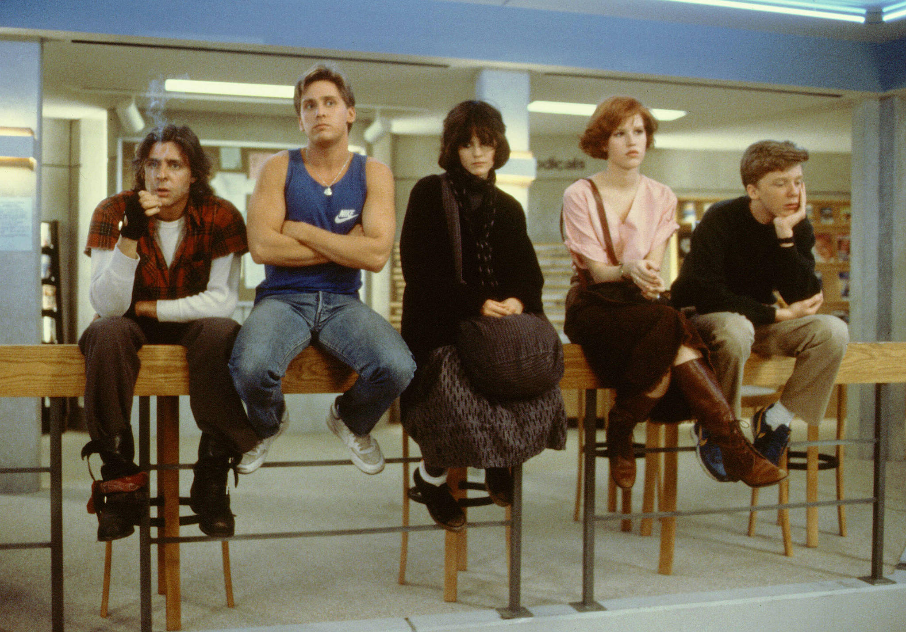
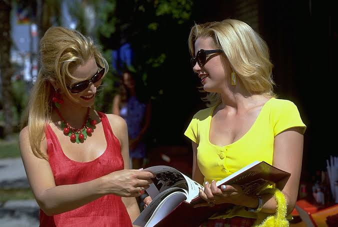
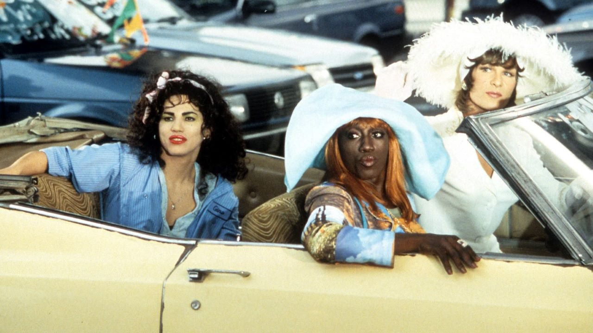
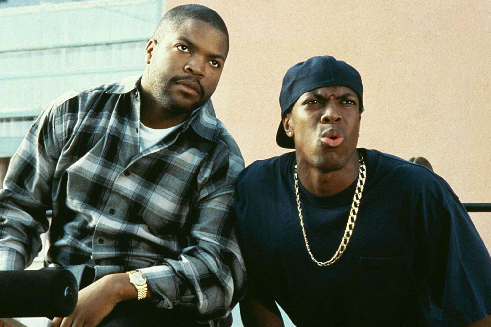
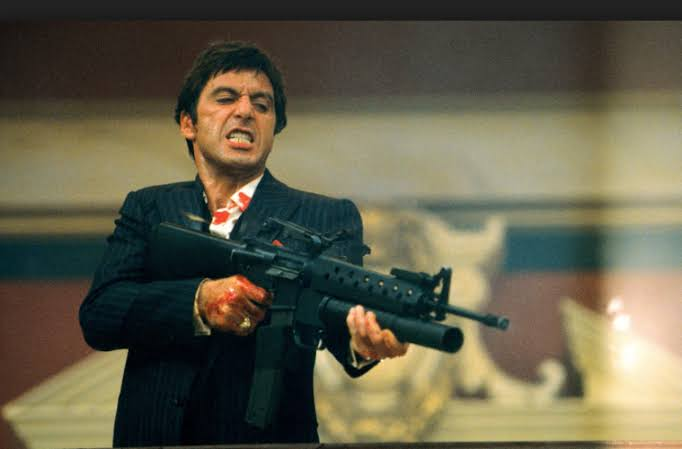
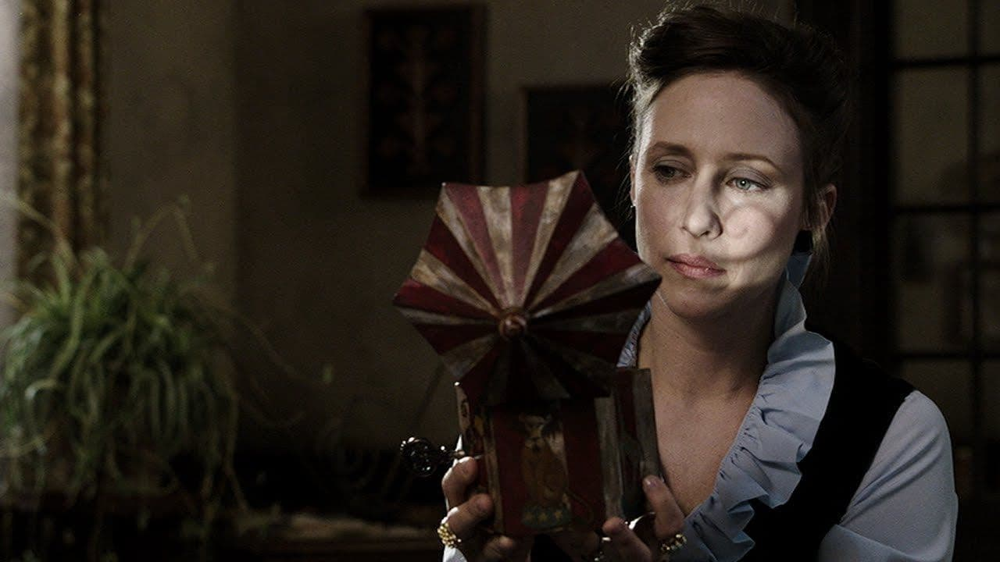
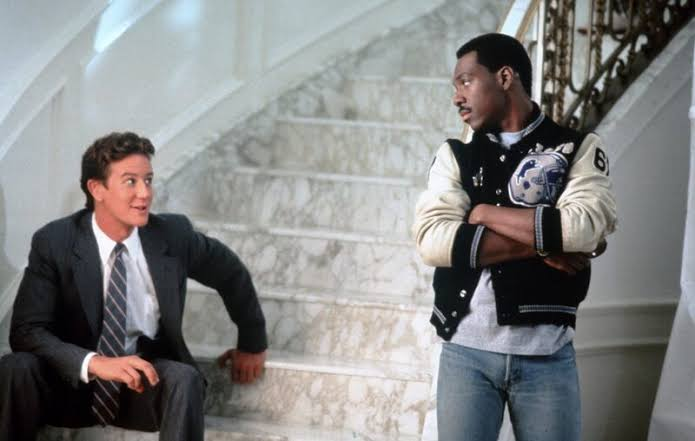
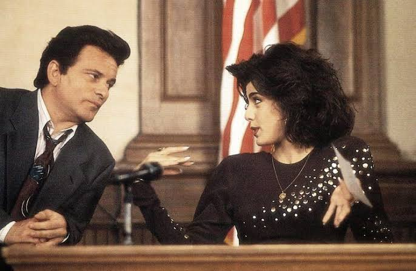
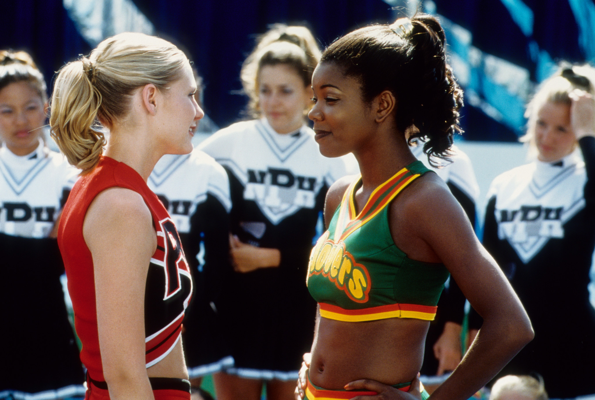
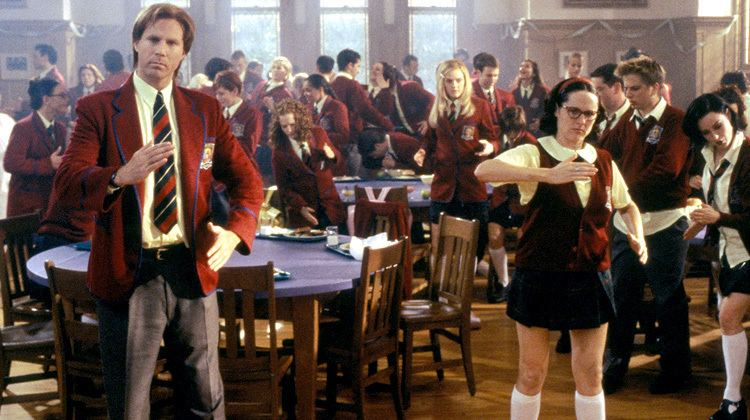

My Top 10 Favorite Movies
Growing up, watching movies was one of my favorite things to do with family. Some of my favorites include:
-
The Breakfast Club (1985)
Click the poster to see the trailer!
"Does Barry Manilow know that you raid his wardrobe?" - John Bender

From left to right: John Bender ( Judd Nelson ), Andrew Clark ( Emilio Estevez ), Allison Reynolds ( Ally Sheedy ), Claire Standish ( Molly Ringwald ), and Brian Johnson ( Anthony Michael Hall )
-
Romy and Michele's High School Reunion (1997)
Click the poster to see the trailer!
"You're a pasty hag on a death bed!" - Michele Weinberger

From left to right: Michele Weinberger ( Mira Sorvino ) and Romy White ( Lisa Kudrow )
-
To Wong Foo, Thanks for Everything! Julie Newmar (1995)
Click the poster to see the trailer!
"Eugene... Eugene?" - Noxeema Jackson

From left to right: Chi-Chi Rodriguez ( John Leguizamo ), Noxeema Jackson ( Wesley Snipes ), and Vida Boheme ( Patrick Swayze )
-
Friday (1995)
Click the poster to see the trailer!
"It's Friday, you ain't got no job, and you ain't got sh!t to do!" - Smokey

From left to right: Craig Jones ( Ice Cube ) and Smokey ( Chris Tucker )
-
Scarface (1983)
Click the poster to see the trailer!
"The eyes chico, they never lie." - Tony Montana

Tony Montana ( Al Pacino )
-
The Conjuring (2013)
Click the poster to see the trailer!
"Sometimes it's better to keep the genie in the bottle" - Ed Warren

Lorraine Warren ( Vera Farmiga)
-
Beverly Hills Cop (1984)
Click the poster to see the trailer!
"You know, this is the cleanest and nicest police car I've ever been in in my life. This thing's nicer than my apartment." - Axel Foley

From left to right: Billy ( Judge Reinhold ) and Axel Foley ( Eddie Murphy )
-
My Cousin Vinny (1992)
Click the poster to see the trailer!
"Everything that guy just said is bullsh!t!" - Vinny Gambini

From left to right: Vinny Gambini ( Joe Pesci ) and Mona Lisa Vito ( Marisa Tomei )
-
Bring it On (2000)
Click the poster to see the trailer!
"Tried to steal our bit, but you look like sh!t! But we're the ones who are down with it!" - Clovers

From left to right: Torrance Shipman ( Kirsten Dunst ) and Isis ( Gabrielle Union )
-
Superstar (1999)
Click the poster to see the trailer!
"You should be very embarrassed because your parents named you after bottled water!"- Mary Katherine Gallagher

From left to right: Sky Corrigan ( Will Ferrell ) and Mary Katherine Gallagher ( Molly Shannon )